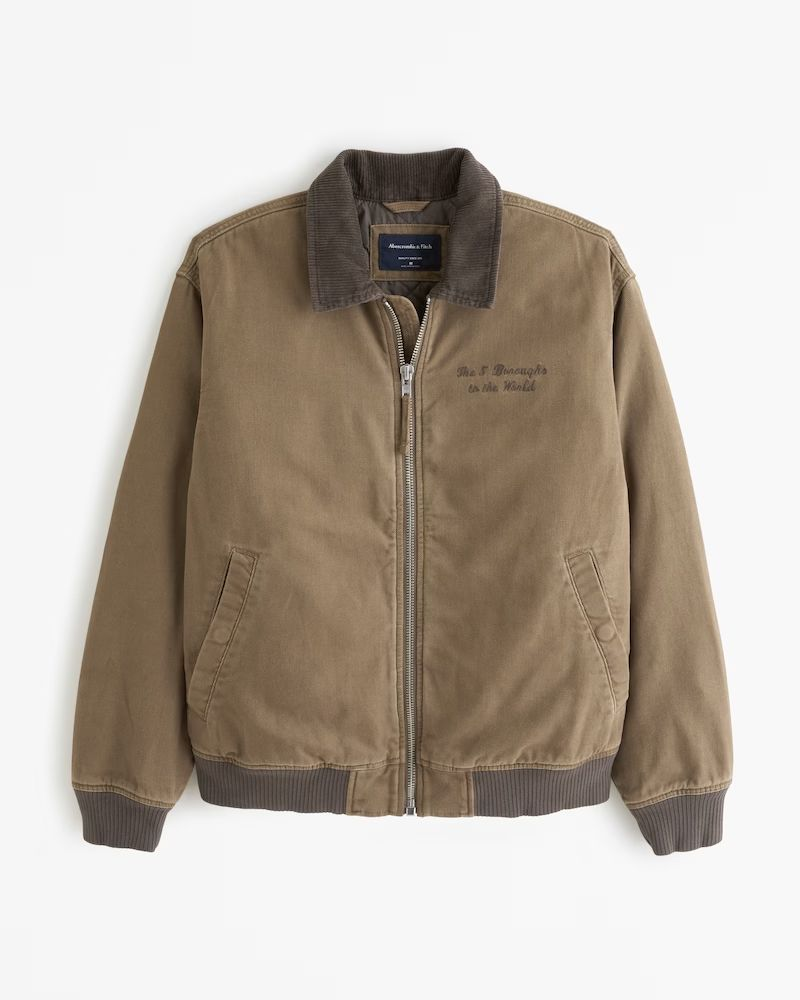

AI Virtual Try-On: How to Swap Clothes in Any Photo with ComfyUI
Ever scrolled past a jacket online and wondered how it would actually look on you, not just on a product model? What if you could virtually "try on" any piece of clothing using just a couple of images? Today, we're demystifying a powerful ComfyUI workflow that does exactly that. Get ready to transform your photos and explore your style like never before. We'll break down a sophisticated process involving ControlNet, Inpainting, and the incredible IPAdapter to give you god-level control over image editing.
The Core Concept: Precision Wardrobe Swapping
At its heart, this workflow is a virtual try-on engine. Its goal is to take a photo of a person, a separate image of a clothing item, and seamlessly replace the person's current outfit with the new one.
To achieve this, it brilliantly combines three core AI techniques:
- ControlNet (with OpenPose): This is our pose-keeper. It analyzes the original image of the person, extracts their exact pose as a "skeleton," and forces the AI to stick to that skeleton. This ensures the final image has the same natural posture as the original.
- Inpainting: This technique allows us to edit a specific part of an image. We provide a "mask" (a black-and-white map) to tell the AI, "Only change the pixels here." In our case, we mask out the original shirt.
- IPAdapter (Image Prompt Adapter): This is the magic wand. Instead of just describing the new clothing with text, we provide an image of the jacket. The IPAdapter analyzes this image and guides the AI to generate the new clothing with the correct texture, color, and style.
By combining these, we can tell the AI: "Take this person, keep their exact pose, replace the area of their shirt, and fill that area with a new jacket that looks exactly like this reference image."
Why, What, and When to Use This Workflow
- Why use this complex setup? Control. A simple text prompt like "man in a brown jacket" would change the entire image—the background, the person's face, and the pose might all be altered. This workflow gives you surgical precision, preserving every detail you want to keep.
- What is it, simply? It's a method for AI-powered clothing swaps. Think of it as an automated, intelligent Photoshop expert.
- When would you use it? E-commerce, personal styling, concept art, or just creating fun content for social media.
Example Transformation: From Tee to Jacket
Here’s a practical look at what this workflow can achieve. We start with a model in a t-shirt, a separate product shot of a jacket, and a few key intermediate steps.
1. Source Model

2. Clothing Style
3. Inpaint Mask
4. Pose Skeleton
5. Final Output
The Nodes Used in This Workflow
This workflow uses a combination of standard and custom nodes. Here’s a breakdown of the key players and their settings in this specific build.
| Node | Purpose & Configuration |
|---|---|
Load Checkpoint |
Loads the foundational Stable Diffusion model. Config: sdXL_v09VaeFix_sdxlUnstableDiffusers_v11.safetensors |
Load Image (x3) |
Used to import our source images: the person, the mask, and the clothing item. |
OpenPose Pose |
A preprocessor node that analyzes an image and extracts a pose skeleton. |
Apply ControlNet |
Applies the pose skeleton as a condition to the generation process. Config: strength: 1.00 |
IPAdapter Unified Loader |
Loads the necessary IPAdapter models. Config: ipadapter_file: ip-adapter_sdxl_vit-h.bin |
IPAdapter_plus |
Integrates the clothing reference image into the main model pipeline. Config: weight: 0.70, weight_type: style transfer |
VAE Encode (for Inpainting) |
Takes the original image and the mask, and converts the masked area into latent space. |
CLIP Text Encode (Prompt) |
Converts your text descriptions into a format the AI understands. |
KSampler |
The main image generator. Config: steps: 25, cfg: 8.0, denoise: 1.0 |
VAE Decode |
Converts the final latent image back into a visible pixel image. |
Prerequisites: What You'll Need
Before you start, make sure your ComfyUI is set up with the following:
- ComfyUI Manager: If you don't have it, install it. It's the easiest way to install the required custom nodes.
- Custom Nodes:
- ComfyUI-Impact-Pack
- ComfyUI_IPAdapter_plus
- ComfyUI-ControlNetAux (for the OpenPose preprocessor)
- Models:
- Stable Diffusion Checkpoint: An SDXL base model (e.g., the sdXL_v09... model used in the workflow).
- ControlNet Model: An OpenPose model compatible with SDXL. A good option is
thibaud_xl_openpose. Place it in yourComfyUI/models/controlnetfolder. - IPAdapter Models:
ip-adapter_sdxl_vit-h.bin: Place inComfyUI/models/ipadapter.CLIP-ViT-H-14-laion2B-s32B-b79K.safetensors: This is the CLIP Vision model. Place it inComfyUI/models/clip_vision.
The Workflow: Step-by-Step Construction
Here is the complete workflow graph. Below it, we'll walk through how to build it from scratch.
Step 1: Load Core Models
Add a Load Checkpoint node and select your SDXL base model. Add an IPAdapter Unified Loader node. Select the ip-adapter_sdxl_vit-h.bin model file.
Step 2: Set Up the IPAdapter Style Reference
- Add a Load Image node and load your clothing image (e.g., jacket.png).
- Connect the
IMAGEoutput of this node to theimageinput of theIPAdapter Unified Loader. - Add an IPAdapter_plus node. Connect the
MODELoutput fromLoad Checkpointto themodelinput ofIPAdapter_plus. - Connect the
IPADAPTERoutput from theIPAdapter Unified Loaderto theipadapterinput ofIPAdapter_plus. TheMODELoutput from this node is now your main model, enhanced with style information from the jacket.
Step 3: Configure the Pose Control (ControlNet)
- Add another Load Image node and load your main subject image (e.g., model.jpg).
- Add an OpenPose Pose preprocessor node and connect the subject's
IMAGEoutput to itsimageinput. - Add a Load ControlNet Model node and select your SDXL OpenPose model.
- Add an Apply ControlNet node. Connect the
CONTROL_NEToutput from the loader to itscontrol_netinput. Connect theIMAGEoutput from theOpenPose Posepreprocessor to itsimageinput.
Step 4: Prepare the Inpainting Latent
- Add a Load Image node and load your mask image (mask.jpg). Pro-tip: You can create this in any image editor by painting white over the area you want to replace.
- Add a VAE Encode (for Inpainting) node.
- Connect the
VAEfrom theLoad Checkpointnode to thevaeinput. - Connect the
IMAGEfrom your main subjectLoad Imagenode to thepixelsinput. - Connect the
IMAGEfrom your maskLoad Imagenode to themaskinput.
Step 5: Write Your Prompts
Add two CLIP Text Encode nodes. In the first, type your positive prompt (e.g., "man wearing jacket"). In the second, type your negative prompt (e.g., "hairy, noisy, bad, watermark..."). Connect the CLIP output from the Load Checkpoint node to the clip input of both prompt nodes.
Step 6: Assemble the KSampler
Add a KSampler node. This is where everything comes together.
- model: Connect the
MODELoutput from theIPAdapter_plusnode. - positive: Connect the
CONDITIONINGfrom your positive prompt. Also, connect theCONDITIONINGfrom theApply ControlNetnode here. A Conditioning (Combine) node can make this cleaner, but connecting them sequentially works too. - negative: Connect the
CONDITIONINGfrom your negative prompt. - latent_image: Connect the
LATENToutput from theVAE Encode (for Inpainting)node.
Step 7: Generate the Final Image
- Add a VAE Decode node. Connect the
vaefrom yourLoad Checkpointnode to itsvaeinput. - Connect the LATENT output from the
KSamplerto thelatent_imageinput of theVAE Decode. - Finally, connect the IMAGE output of the
VAE Decodeto a Save Image or Preview Image node.
You're ready! Click Queue Prompt and watch the magic happen.
Fine-Tuning and Troubleshooting
- Denoise is Key: The KSampler's
denoiseis set to 1.0. This tells the AI to completely replace everything in the masked area. If you want to blend the new clothing with the original shirt's texture or lighting, try a lower value like 0.85. - Adjusting the Style Match: The
weighton theIPAdapter_plusnode controls how strongly the jacket image influences the result. The 0.7 used here is a good balance. If the output isn't matching your jacket's style, increase this value. If the AI is copying it too literally and it looks flat, decrease it. - Bad Mask = Bad Results: The quality of your mask is critical. If the edges are jagged, you'll see a harsh line on your final image. Use a soft brush or feather the edges of your mask in an external editor for a smoother blend.
- Wrong Pose? If the final character isn't holding the pose, ensure you've loaded a compatible SDXL ControlNet model and that its strength in the
Apply ControlNetnode is set to 1.0.
Your Turn to Create!
Now you have the knowledge and the map. This workflow is a template for endless creativity. Grab a photo of yourself, find an image of a piece of clothing you like, and build your own virtual dressing room. Experiment with different garments, from vintage sweaters to futuristic armor. The only limit is your imagination.
Use Cases and Real-World Examples
- Fashion E-commerce: A small online clothing store could use this to display their entire collection on a single model, saving thousands on photography costs.
- Movie Pre-production: A costume designer could generate concept art showing an actor in dozens of different outfits in a matter of hours, not weeks.
- Social Media Marketing: A brand could run a campaign where users submit their photos to "try on" the new collection, creating engaging, user-generated content.
Next Steps
Feeling confident? Here are some ideas to push this concept even further:
- Add More ControlNets: Combine OpenPose with a Depth or Canny ControlNet to control not just the pose but also the 3D shape and outline of the clothing.
- Incorporate LoRAs: Add a LoRA (Low-Rank Adaptation) to the workflow to influence the artistic style of the entire image, creating a painterly or anime-style virtual try-on.
- Batch Processing: Use ComfyUI's batching features to apply the same jacket to a whole folder of different model images automatically.